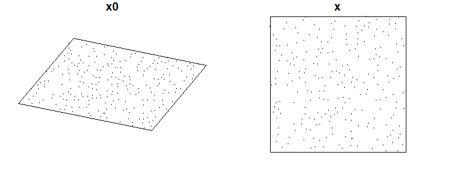
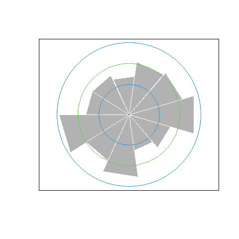
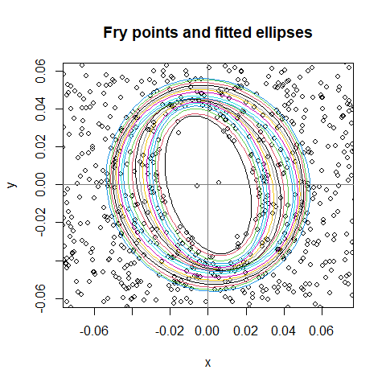
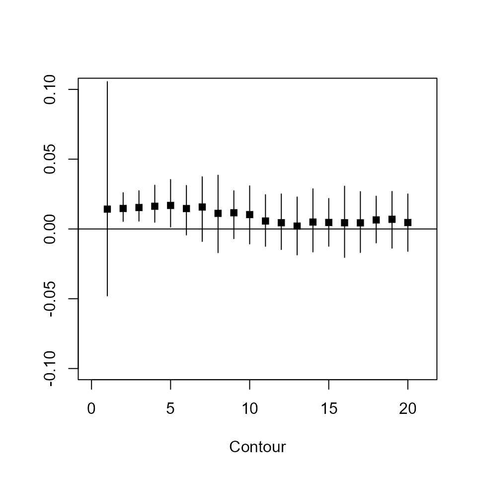
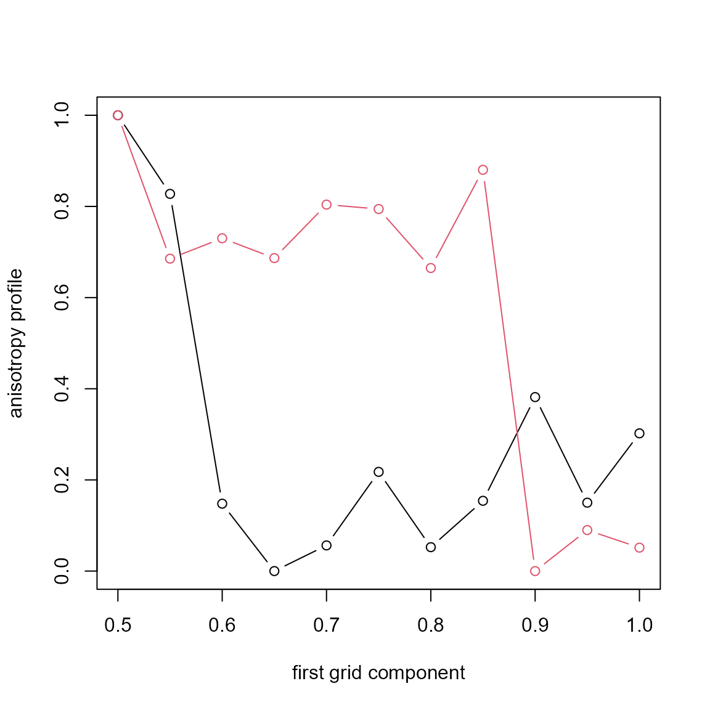
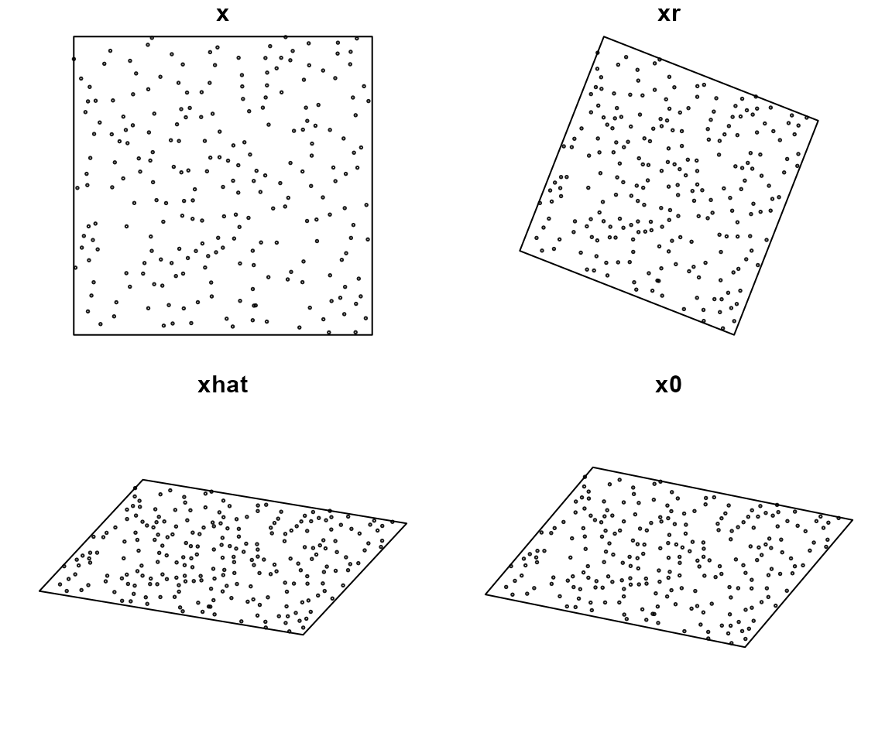
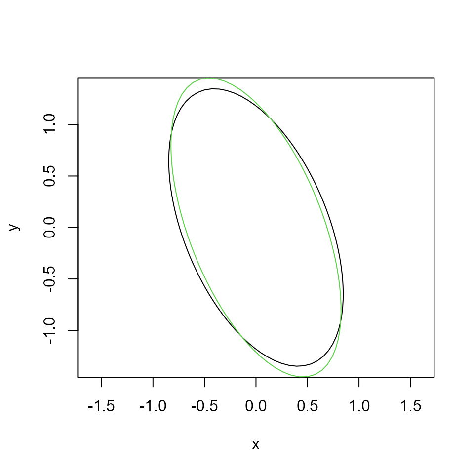

Example 2D anisotropy analysis using Kdirectional
Tuomas Rajala
2022-12-10
Source:vignettes/anisotropy-example.Rmd
anisotropy-example.RmdOriginally written around 2014. Updated 10.12.2022.
Introduction
The package Kdirectional is a collection of tools for
analysing the isotropy of 2- and 3-dimensional point patterns. This
document shows how to use some of these tools by analysing an synthetic
example pattern.
In this vignette we use the following packages:
Example pattern
We simulate Strauss process and transform it. Assume the transformation is
comp <- 0.7
D <- diag( c(comp, 1/comp))
angle <- pi/8
R <- rotationMatrix3(az=angle)[-3,-3] # internal, not rgl one
C <- R%*%Dthat is, we compress the x-axis by factor 0.7 and stretch the y-axis to keep volume 1. Then we simulate the original process in a window that will be square after the transformation
and transform it to the observed pattern
x <- affine(x0, C)Check things went ok (define a little helper for plotting):

The pattern on the left is what we want to estimate.
Nearest neighbour vectors
Check for starters the distribution of nearest neighbours vectors.
nna <- nnangle(coords(x))
ang <- nna[,1]-pi
par(mfrow=c(1,2))
angles.flower(ang, ci = T, k=24, bty = "n")
# Compare to spatstat
rose(ang, unit = "rad", nclass = 24+1, main = "")
The blue rings give approximate 95% pointwise confidence intervals. Hard to see anything definite, perhaps some peakyness at the 2:30’oclock axis. Nearest neighbours are not very informative, so let’s analyse the full set of pairwise vectors.
Fry-points and ellipsoids
As in the paper [1], the Fry-points tell us interesting things about the isotropy.
f <- fry_ellipsoids(x, nvec=1:20, nangles = 30, eps=0.1, r_adjust = .2)r_adjust=.2 reduces the computations to pairs with
length within 20% window width, eps adds a bit of angular
smoothing (in radians), and nangles chooses the amount of
directions to look at.
Plot the estimated ellipsoids:
plot(f, zoom=.3, used_points = FALSE)
Oval shape is visible, some ambiguity of rotation. Check the ellipticity with a contrast \(axis_x-axis_y=0\):
## mean median sd CI.2.5% CI.97.5% p
## Contour_1 0.014 0.015 0.034 -0.048 0.11 0.68
## Contour_2 0.015 0.014 0.0053 0.0054 0.026 0.01
## Contour_3 0.015 0.015 0.0053 0.0056 0.027 0.0074
## Contour_4 0.016 0.016 0.0066 0.0048 0.031 0.02
## Contour_5 0.017 0.016 0.0084 0.0014 0.035 0.055
The first contour is poorly estimated as there are some short range pairs, kind of like Poisson noise. Others seem to hint of compression (the p-values and confidence intervals are biased and conservative).
Let’s compute the average rotation, where we scale each ellipsoid to
have det = 1 by setting just_rotation=TRUE.
contours <- f$ellipsoids[-1]
mean_e <- mean_ellipsoids(contours, just_rotation = TRUE)
summary(mean_e)## Average 2D ellipse, computed from 19 2D ellipses.
##
## Estimates:
## Center: (-0.003603507, 0.033050560)
## Semi-axes lengths (absolute): 0.906708 : 1.113431
## Semi-axes lengths (relative): 1.000 : 1.228
## Rotation angles (rad): -2.768
## Rotation angles (deg): -158.6
## Error variance: 0.007447662Rotation seems to be non-zero (or non \(\pm\pi\)). Ignore the error variance, its not correct.
c(true=angle, est=mean_e$rot_angle + pi)## true est
## 0.3926991 0.3739214Backrotate the pattern:
Rhat <- rotationMatrix3(az=pi)[-3,-3]%*%mean_e$rot
xr <- affine(x, solve(Rhat))Next we estimate the compression by minimizing the difference of K-functions along the main axes. We need to provide a grid to optimise over:
Then compute the anisotropy profile:
r <- seq(0, 0.2, length=50)
eps <- pi/10
ani <- anisotropy_profile(xr, grid = grid, r=r, eps=eps, power=2)
ani0 <- anisotropy_profile(x, grid = grid, r=r, eps=eps, power=2)We set the sector-K angle with eps and use integral of
squared differences (power=2) as the distance.
Plot the profiles, scaled to 0-1 for plotting (it’s the default):

( s <- summary(ani) )## Anisotropy profile
## Range of integration: [ 0 , 0.2 ]
## Difference power: 2
## Optimal transformation: diag( 0.65 1.538462 )Estimated compression
c(true=comp, est=s$estimate[1])## true est
## 0.70 0.65Backtransform:
Recap of the steps:

Finally, let’s illustrate the estimated transformation. Use simulation and estimation to get an ellipsoid object:
Chat <- Rhat %*% Dhat
e0 <- ellipsoid_OLS( rellipsoid(1000, c(1,1), R = C) )
e <- ellipsoid_OLS( rellipsoid(1000, c(1,1), R = Chat) )